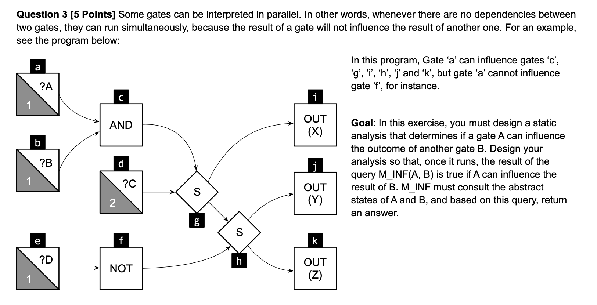

Forward analysis. Must analysis.
The lattice is of Scope=℘(Vars) with these operations for evaluation State={Vars,⊆},
- eval(σ,op(Y,X))=op(eval(σ,Y),eval(σ,X))
- eval(σ,S(Y,X))=(snd∣fst)(S(eval(σ,Y),eval(σ,X)))
- eval(σ,op(X))=op(eval(σ,X))
- eval(σ,INPUT(X))=X
- eval(σ,INPUT(N,X))=(N>0⟹X)∨(N≤0⟹⊥)
- eval(σ,OUTPUT(X))=X
op:
- AND(Y,X)
- AND(0,X)=∅
- AND(1,X)=X
- OR(Y,X)
- OR(0,X)=X
- OR(1,X)=∅
- S(X,CONTROL)={¬CONTROL⟹[X,⊥],CONROL⟹[⊥,X]}
- S(X,0)=[X,∅]
- S(X,1)=[∅,X]
- S(X,Y)=[{X,Y},{X,Y}]
- NOT(X)=X
Functions:
- JOIN(v)=⨆w∈pred(v)[[w]]
- op(Y,X):[[v]]=JOIN(v)[eval(JOIN(v),op(Y,X))]
- op(X):[[v]]=JOIN(v)[(eval(JOIN(v),op(X)))]
[[i]]={i}∪[[g]]={i,g,c,b,a,d}
[[j]]={j}∪[[h]]={j,h,g,c,b,a,d,f,e}
[[k]]={k}∪[[h]]={k,h,g,c,b,a,d,f,e}
[[h]]={h}∪[[g]]∪[[f]]={h,g,c,b,a,d,f,e}
[[f]]={f}∪[[e]]={f,e}
[[e]]={e}
[[g]]={g}∪[[c]]∪[[d]]={g,c,b,a,d}
[[d]]={d}
[[c]]={c}∪[[b]]∪[[a]]={c,b,a}
[[b]]={b}
[[a]]={a}
M_INF(V,W)=if({V}⊂[[W]]) then TRUE else FALSE
M_INF is just time: O(∣[[W]]∣) & space: O(1) if constructed abstrace states.
O(E) for E nodes, must visit each once.
Just contains the abstract value of the Node, so O(1) for each Node hence O(E) for E nodes.